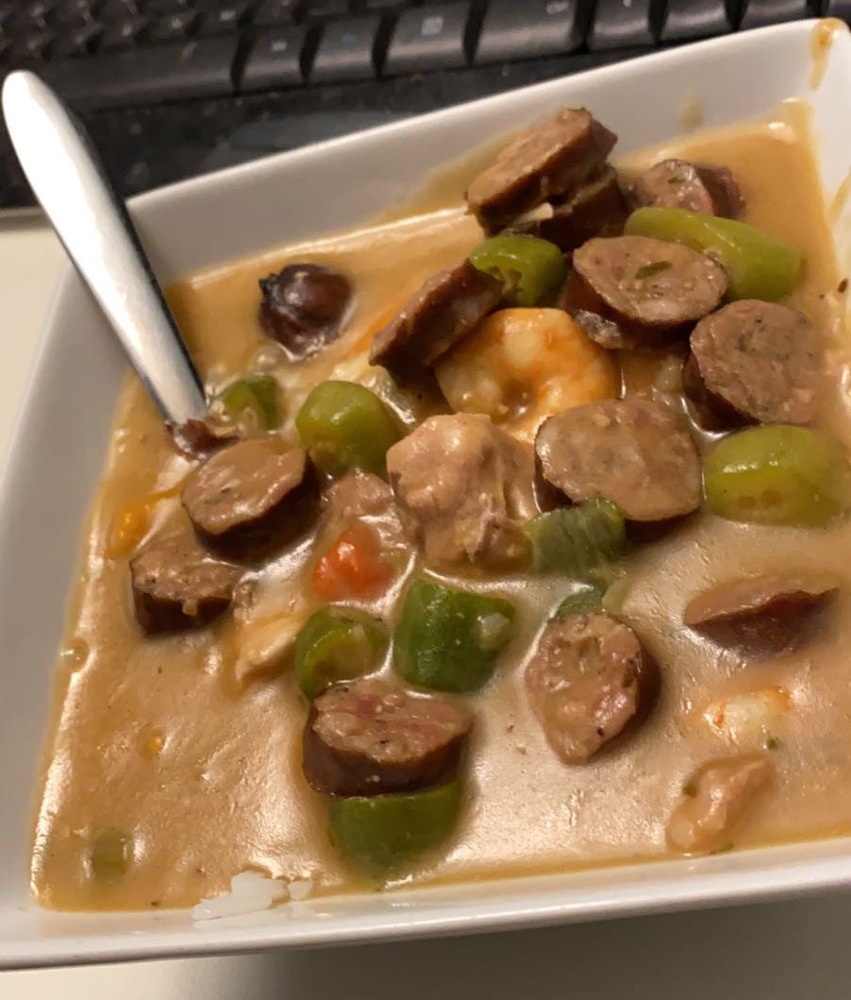

Authentic New Orleans Gumbo
by Lauren Allen

Ingredients
- All-Purpose Flour
- Vegetable Oil
- Diced Celery
- Diced Yellow Onion
- Diced Green Peppers
- Diced Red Peppers
- Chopped Parsley
- Garlic Cloves
- Cajun Seasoning Mix
- Chicken Broth
- Sliced Andouille Sausage
- Diced Chicken Thighs
- Shrimp
Instructions
- Combine the flour and oil in a large pot over medium low heat.
- Mix flour-oil mixture consistently until it forms a dark roux.
- In a separate pan, cook the sausage and the chicken thighs.
- Add diced vegetables to the roux and stir until fragrant.
- Add seasoning and chicken stock; stir until combined.
- Add the cooked sausage and chicken to the pot and stir.
- Season to taste.
Notes
This is one of the recipies my dad always made when I was a kid. He would come home from work late at night and just start cooking! We'd be eating dinner at 1 in the morning. Fun times!
Click here to find more free recipies!